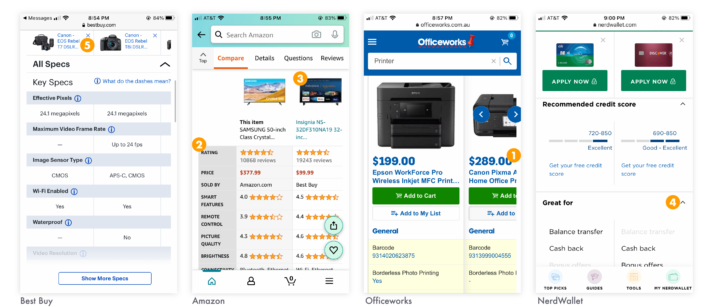

Mobile Comparison Table
I redesigned Capterra's data-heavy, dynamic comparison table to provide a faster, more readable, and more useful experience for our mobile users.
TLDR: Redesigned Capterra's main comparison table specifically to encourage mobile engagement and conversion.
- Role: Lead UI Designer
- Software Used: Figma, Illustrator, Axure
- 100% of users frictionlessly chose the correct software for their needs
- Users took 20% less time to choose a software option

The Problem
Capterra’s software comparison table is one of its most helpful tools. However, mobile users had a difficult time interacting with the table: the horizontal scrolling and sticky elements were inaccessible, glitchy, and not ideal for comparing many data points at one time.
Users were bouncing at a high rate (62%), and converting at a low rate (14%).
There was no clear path to access or leave this template.
Comparing across more than two products was nearly impossible.
The page was slow and glitchy (scored a 23 on PageSpeed Insights).
Google had a difficult time indexing the content.
Row labels were not sticky which made it easy to get lost in the table.
User Journey
Mapping the average user's journey helped us find opportunities for new features, and identify major pain points with the old design. Allowing users to choose their own path, and save the comparison for later was a key improvement we uncovered.
Research Findings
We surveyed dozens of competitors, market leaders, ecommerce sites, and online marketplaces’ approaches to mobile comparisons and found no clear consensus. We used a variety of elements from these sites, as well as feedback from real users, in our first rounds of testing.

After surveying dozens of examples and consolidating existing user feedback and data, my team conducted an ideation session to identify which features and elements were most important to surface in the new design.
We identified key areas of improvement to optimize our comparison table:
1
Users prioritize pricing information more than other data.
2
Rating and reviews information is important, but easily seen as biased.
3
Large, high-quality product screenshots help users judge how user-friendly the product is.
4
Accordions help users open and close only the data they find valuable.
5
Sticky elements are necessary with horizontally scrolling tables, but can become visually obtrusive.
Prototyping & User Testing
We tested multiple designs to ensure that users were able to easily and intuitively use the product, as well as to accomplish their goal without interruption or confusion.
I mocked-up and tested a new approach: breaking the table apart into discrete accordions so that users can compare products across one data point at a time.
Our driving question in moderated tests was “Can users draw an informed conclusion about which product best suits their needs as compared to the other products in this list?”. We also tested user comprehension of new functionality and UI elements.
We found that the new design:
"Chunks" the information into easily readable and sortable data.
Eliminated awkward scrolling and sticky elements.
Made it easy to add and remove products from the comparison.
Clearly laid out the pros and cons of each product.
The Solution
When we stopped thinking about the template as a comparison “table”, and started thinking about it as a comparison “experience”, we were able to create a product that fulfilled user needs even though it looks and acts radically different than before.
1
Stacked Accordions
Users can customize their comparison by only expanding the data points they’re interested in, and quickly removing any products that don’t meet muster.
This design provides the user with important context like row and column labels no matter where in the template they are.
2
Add to Compare
Rather than directing users to an entirely different page when they want to add a product to the comparison, users can now search for products within the comparison template.
Keeping the add and remove functionality clear and easy-to-use helps users make the most out of comparing 4 products at a time.
3
Sharing & Saving
We found that often users perform "shallow" research on their mobile phones and in-depth research on desktop.
Giving users an easy, clear way to switch from their phone to desktop without skipping a beat allows for a frictionless decision making process.
4
Surfacing More Data
Research shows that users care deeply about pricing, screenshots, features, and real reviews from fellow users. The accordion design creates new space for this data.
Rethinking our data model allowed us to surface popular comparisons, suggested comparisons, similar comparisons, and other relevant paths for users to follow.
Key Learnings & Next Steps
With all major usability concerns ironed out in testing, and positive feedback from users in moderated testing, the mobile comparison template is in development and ready to be rolled out in Q4 2020.
The next step of this project is a subtle rearchitecture to help users better understand Capterra. For many users, this template will be their first introduction to the site. User interviews show us that for these users, it is difficult to quickly understand what Capterra does, and what other tools it has to offer. Clarifying this messaging is a key next improvement.
Next steps include:
1
Roll out AB test to 100% of traffic to verify user testing findings with large-scale traffic
2
Apply the mobile-first design to desktop and roll out a fully responsive version of the page
3
Optimize page for conversion rate and revenue
4
The page has become increasingly important for organic search results, and we will continue to optimize for SEO
5
Perform additional testing to identify more desired data points
Next Case Study 
Hackathon: Podcast App
Design System for Capterra
Developed with Love by Amelia Peacock 2020